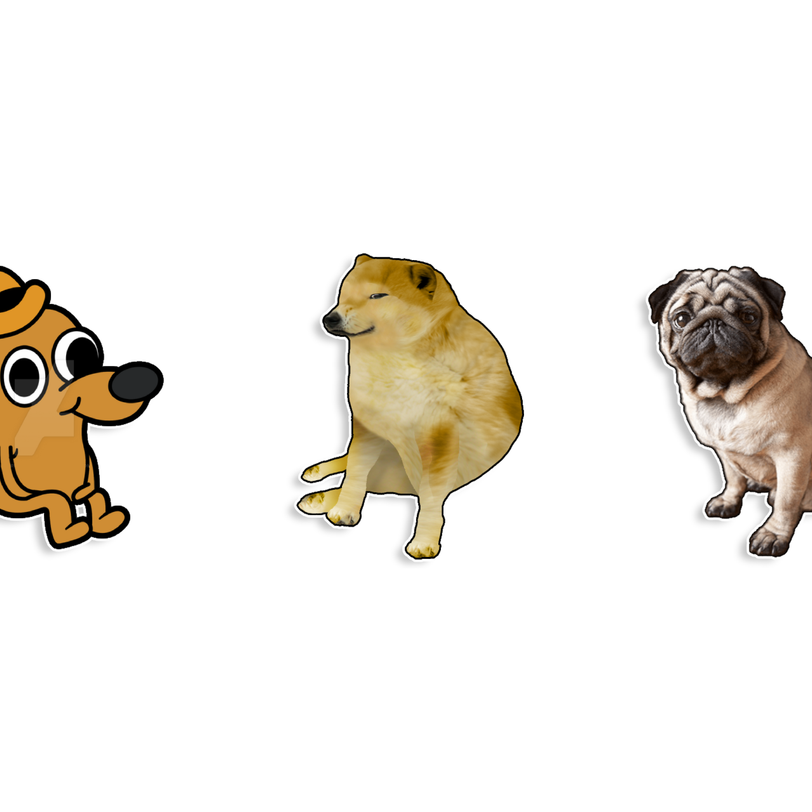

UQRUG Presents: Cool But Useless
ggdogs
Ever wanted to replace the points in your ggplot with dogs?

ggcats
What about cats?

ggbernie
Or Bernie Sanders?

geom_label
You can play with adding labels to make things more interesting too.

gganimate

# Packages
library(dplyr)
library(ggplot2)
library(ggthemes)
library(gganimate)
library(ggcats)
# A function to generate a data frame with simulated data and cats
data_cat <- function(from = 0, to = 80, by = 1, fun = rnorm,
cat = "", sd = 3, category = "") {
tibble(
x = seq(from, to, by),
y = fun(x) + rnorm(length(x), sd = sd),
category = rep(category, length(x)),
cat = rep(cat, length(x))
)
}
# Data for my focus
concentration <- data_cat(
fun = function(x) 4 * sin(1.5 * x) + 4,
cat = "lil_bub",
sd = 1, category = "focus"
)
# Data for my duties
set.seed(10)
duties <- data_cat(
fun = function(x) 5 + 1.5 * exp(x / 20),
cat = "pusheen_pc",
sd = 2, category = "duties"
)
# Data for my anxiety
anxiety <- data_cat(
fun = function(x) 10 + exp(x / 15) + 4 * sin(x),
cat = "nyancat",
sd = 1, category = "anxiety"
)
# Complete data
full_data <- rbind(concentration, duties, anxiety)
ggplot(full_data, aes(x, y)) +
geom_line(aes(color = category), size = 1) +
geom_cat(aes(cat = cat), size = 4) +
labs(
y = element_blank(),
x = "Time",
caption = "Graph by JPCH. Generated with `ggplot2`, `ggcats` and `gganimate`",
) +
scale_color_manual(
values = c("#EE2C2C", "#FF8C00", "#68228B"),
labels = c("Anxiety", "My focus", "Duties")) +
theme_fivethirtyeight() +
theme(
axis.text.y = element_blank(),
axis.ticks.y = element_blank(),
axis.text.x = element_text(size = 12, color = "black"),
axis.title.x = element_text(size = 14, face = "bold"),
legend.text = element_text(size = 14, face = "bold"),
legend.position = "top",
legend.title = element_blank()
) +
transition_reveal(x)